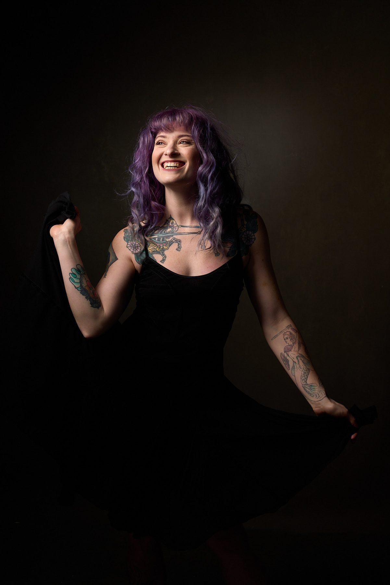
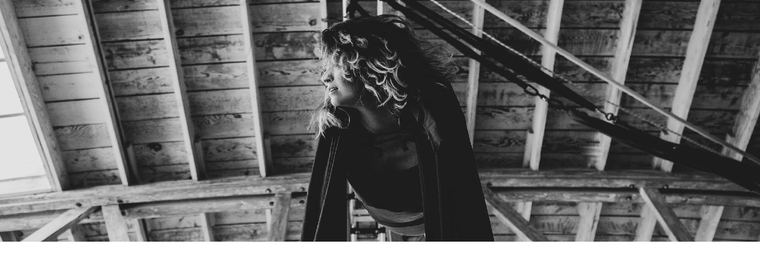
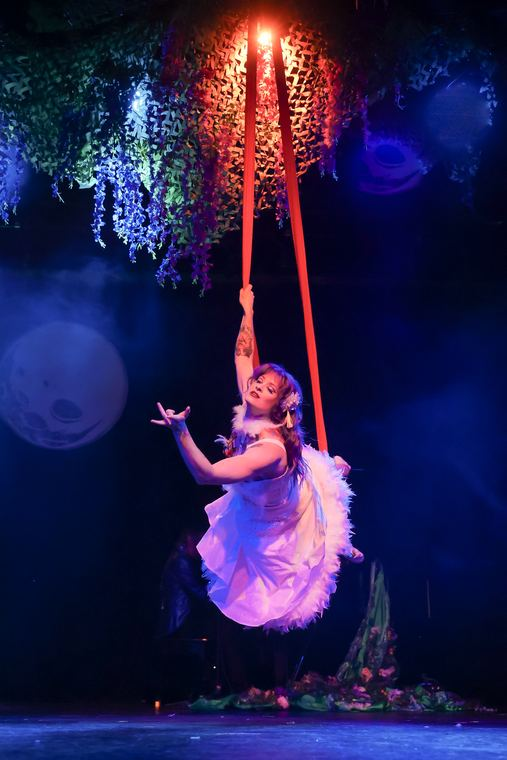
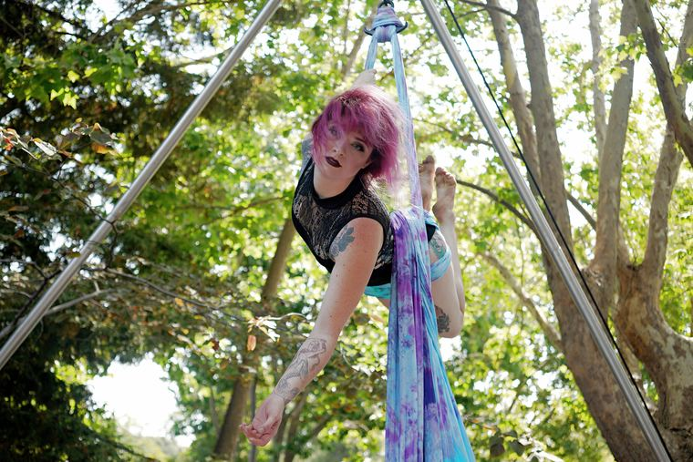
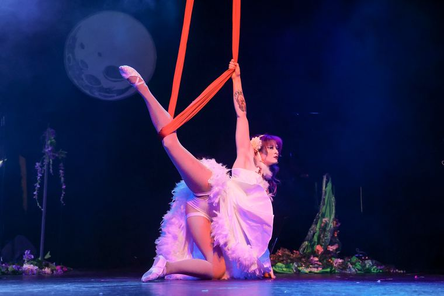
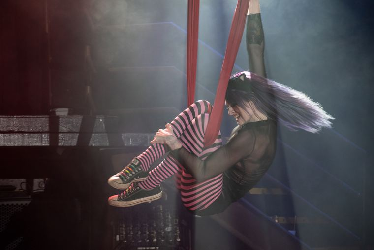
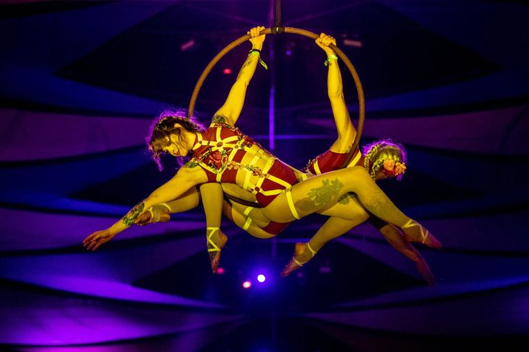

Bio, credits, and high-res photography for press & booking.

A North Carolina native and California transplant, Luna Finn discovered circus at Burning Man 2010.
She has performed across the United States with a range of musical artists, in venues from coast to coast. Luna founded the circus collective DAM Circus and teaches aerial hammock, silks, and cube. When not performing, she enjoys painting, chair dance, cooking, and time with her husband Jaymes and service dog Akira.






For press: technical rider, additional high-res images, and press quotes are available on request — get in touch.